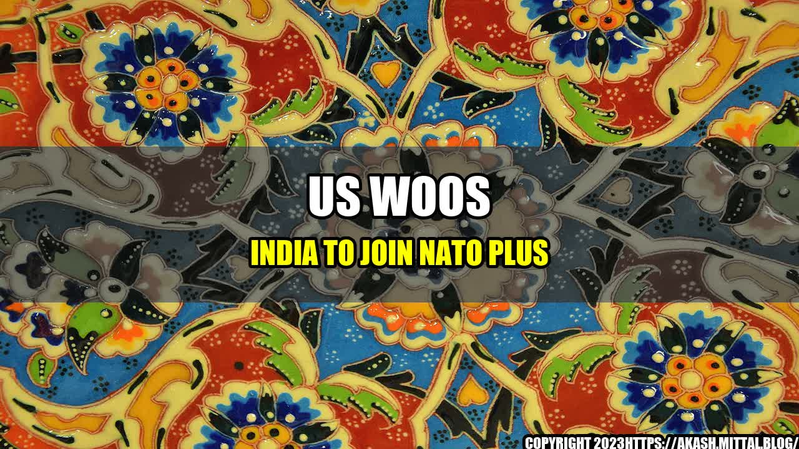

US Woos India to Join NATO Plus Ahead of Modi Biden Meeting

India and the United States have been strategic partners for some time now, with both countries sharing similar democratic values and interests. However, the recent rise of China has created a need for greater military cooperation between the US and India. This is where the NATO Plus idea comes in.
NATO Plus is a coalition that includes countries outside of the North Atlantic Treaty Organization (NATO), such as Japan, South Korea, Australia, and New Zealand. The US is now urging India to join this group as well, which would further bolster the military alliance against China.
The Modi-Biden meeting, scheduled for later this month, is expected to cover a range of issues, including defense cooperation and the possibility of India joining NATO Plus. Here are some quantifiable examples of why this move could be beneficial for India:
- India is currently the world's third-largest military spender, with a defense budget of $72.9 billion in 2020. Joining NATO Plus would give India access to advanced military technology and equipment from the US and other member countries.
- The group's collective defense clause would also provide India with a greater sense of security against China, which has been increasingly aggressive in its border disputes with India.
- Further military cooperation with the US would also help India to project its power and influence in the region, and potentially counterbalance China's growing influence.
However, joining NATO Plus could also have some negative consequences for India. Here are some potential harms that could result from this move:
- China has already warned India against joining any anti-China military alliance, and retaliatory measures could be taken against India if it does so.
- Joining NATO Plus could also harm India's relations with Russia, which is a major defense supplier to India and a close ally of China. Russia has already expressed concerns about the expansion of NATO and the US-led military buildup in Asia-Pacific.
- India might also face domestic opposition to joining another military alliance, especially if it is seen as compromising India's sovereignty or aligning too closely with the US.
Despite these potential harms, the benefits of joining NATO Plus seem to outweigh the risks. Here are three reasons why India should seriously consider this move:
- It would strengthen India's defense capabilities and provide greater security against China's military aggression.
- It would improve India's strategic position in the Indo-Pacific region and help to counterbalance China's growing influence.
- It would deepen the US-India strategic partnership and potentially lead to greater economic and political cooperation between the two countries.
In conclusion, the US's push for India to join NATO Plus is a significant development that could have major implications for the Indo-Pacific region. India must weigh the potential benefits and harms of such a move before making a decision, but it is clear that greater military cooperation with the US and other member countries could strengthen India's strategic position and provide greater security against China's military aggression.
#USIndiaRelations #NATOPlus #ModiBidenMeeting #ChinaIndiaBorderDispute #IndoPacificRegion #MilitaryCooperation
References:
- https://www.aljazeera.com/news/2021/9/5/us-urges-india-to-join-nato-plus-ahead-of-modi-biden-meeting
- https://www.reuters.com/world/asia-pacific/modi-us-defence-secretary-austin-discuss-afghanistan-situation-monday-2021-09-06/
- https://www.dw.com/en/nato-plus-membership-what-could-be-indias-stakes-in-it/a-59111092
Curated by Team Akash.Mittal.Blog
Share on Twitter Share on LinkedIn